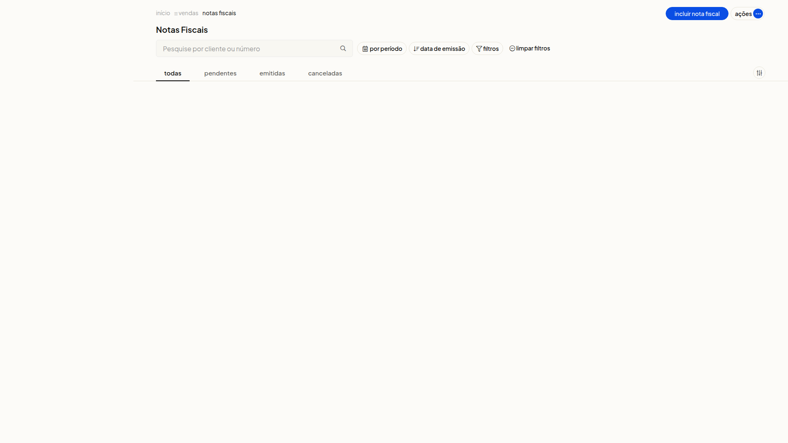
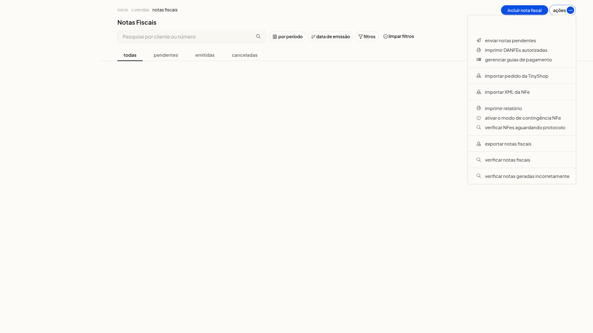
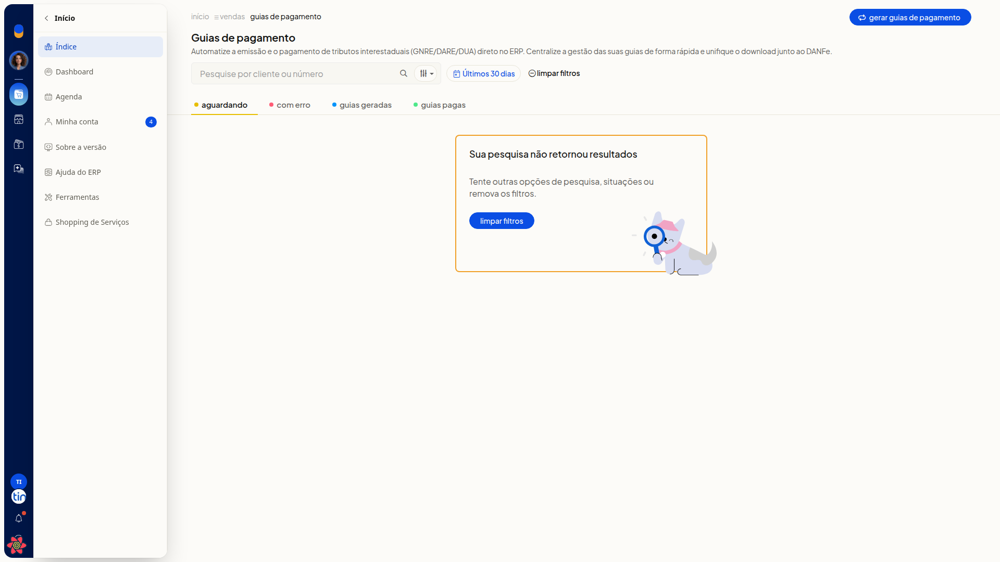
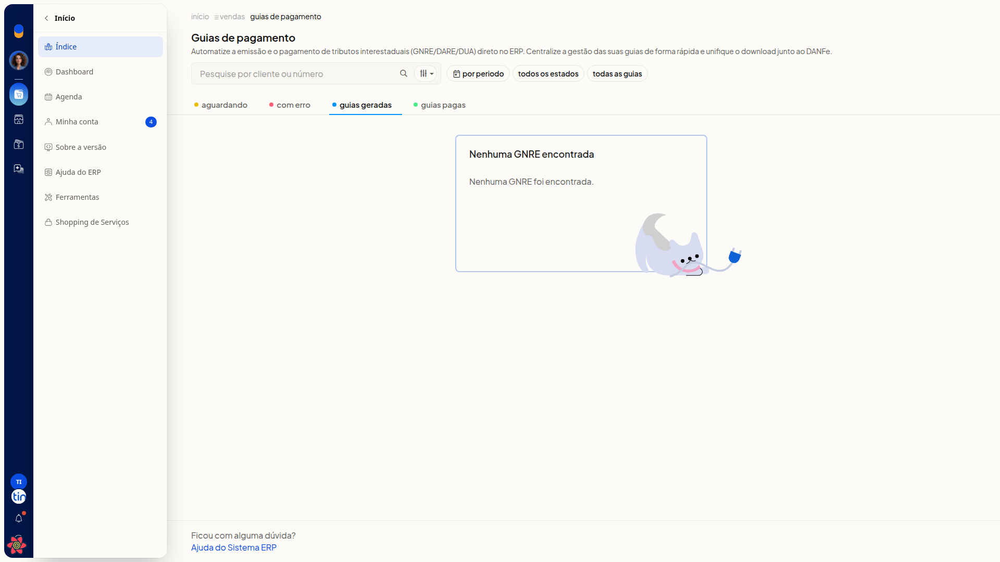
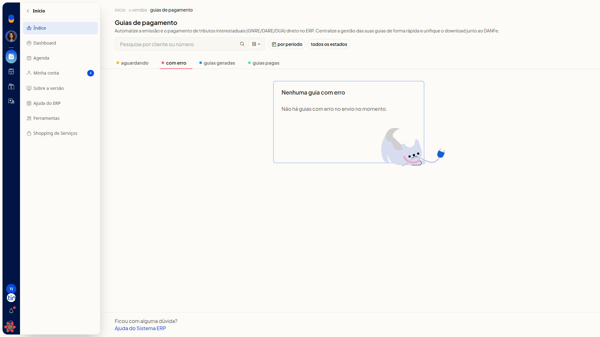
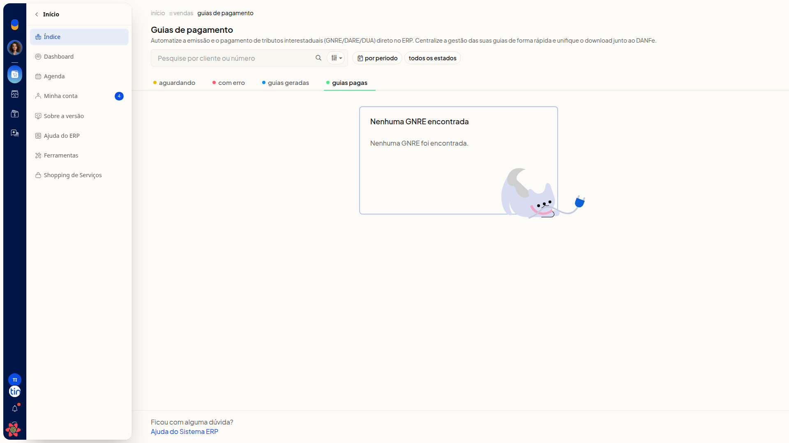

Pagar guias GNRE com a conta digital ou marcá-las como pagas manualmente
A tela Guias de pagamento consulta as guias GNRE por situação. Você acompanha cada guia e pode pagá-la com a Conta Digital da Olist ou marcá-la como paga manualmente.
Importante
- A guia só pode ser paga com a Conta Digital.
- Marcar como pago manualmente não movimenta a Conta Digital.
- Na janela de guias de pagamento não há seletor de meio de pagamento.
- Sem guias, as ações de pagamento não aparecem.
Instruções
-
Acesse Vendas > Notas Fiscais.

-
Clique em Ações.

-
Clique em gerenciar guias de pagamento.

-
Consulte as abas Aguardando, Com erro, Guias geradas e Guias pagas.



-
Se precisar, filtre por período (Sem filtro, Período, Mês, Últimos 30 dias ou Data) ou por estado. Para remover o filtro, clique em Limpar filtros.
-
Se precisar, busque com as opções número, cliente ou Não refinar.
-
Clique em Pagar com conta digital ou em Marcar como pago manualmente. As duas ações abrem o modal de pagamento de Contas a Pagar.
Informações adicionais
A aba sem guias exibe uma mensagem
- Na aba Aguardando, a pesquisa sem resultados mostra Sua pesquisa não retornou resultados. Depois de Limpar filtros, a mensagem é Nenhuma GNRE encontrada.
- Nas abas Guias geradas e Guias pagas, a mensagem é Nenhuma GNRE encontrada.
- Na aba Com erro, a mensagem é Nenhuma guia com erro.